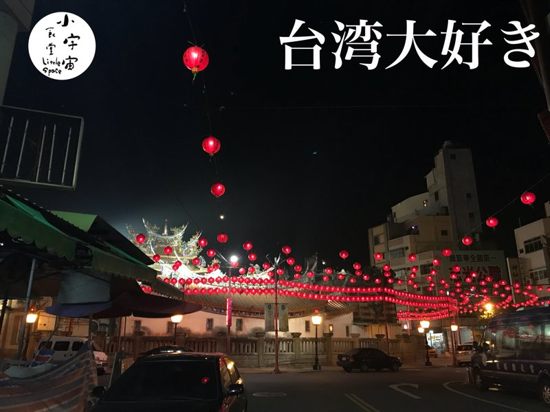

日本在住の10年間にぼちぼち仕事や友人や先生など案内ツアーの経験は何度もありました
これから仕事のお買い出しを兼ねて
シエの台湾プライベートツアーを開催したいと思います
人数は
1名様から最大6名まで
6名以上は応相談
だいたいの流れは
参加者がフリープランのツアーを購入して
現地集合しましょう
例えば宿泊先のロビーで会いましょう
空港の送迎は付いていると思います
事前にご希望の内容を伺ってからいろんな手配しますね
例えば
ローカル市場行きたい
縁日、祭り行きたい
自然食品店行きたい
問屋さん行きたい
マンゴーの故郷行きたい
台湾現地の料理教室行きたい
原住民の村行きたい
田舎料理食べたい
などなど
定番からdeep台湾まで
ぜひご相談ください
日本国内でのプラニングと現地の同行まで含めます
もちろんできる範囲内で通訳も頑張ります〜笑
もしチャーターバスが必要な場合は手配できます
実費を報告します
闇商売はしません
専業ガイドではないですが
それぞれのご希望に答える楽しい案内できると思います
私も旅が大好きです
楽しい台湾を紹介できたら
私も航空券代などカバーできたら
お互いに嬉しいなぁと思います
不定期ですが
急な決まりもありますが
例えば
6月の月末に台湾へ行きます！
台湾旅行のベテランの方に
プラニングだけも可能です
気軽にお問い合わせ下さい
#写真地はシエの母の故郷ー北港という女神様の町風景です